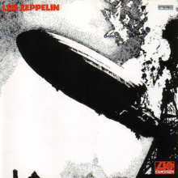
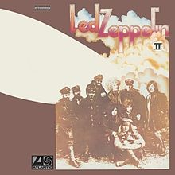
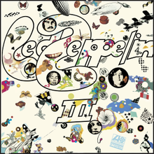
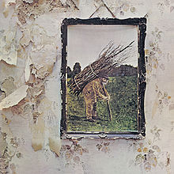

Led Zep Discography
I'm on a beanbag right now because it's the seventies.
This is what this legendary band have put out.
Easily enough for me their first four albums were just, like, numbered. In order.
- Led Zeppelin
|  |
- Good Times Bad Times
- Babe I'm Gonna Leave You
- You Shook Me
- Dazed and Confused
- Your Time Is Gonna Come
- Black Mountain Side (instrumental)
- Communication Breakdown
- I Can't Quit You Baby
- How Many More Times
|
- Led Zeppelin II
|  |
- Whole Lotta Love
- What Is and What Should Never Be
- The Lemon Song
- Thank You
- Heartbreaker
- Living Loving Maid (She's Just a Woman)
- Ramble On
- Moby Dick
- Bring It On Home
|
- Led Zeppelin III
|  |
- Immigrant Song
- Friends
- Celebration Day
- Since I've Been Loving You
- Out on the Tiles
- Gallows Pole
- Tangerine
- That's the Way
- Bron-Y-Aur Stomp
- Hats Off to (Roy) Harper
|
- Led Zeppelin IV
|  |
- Black Dog
- Rock and Roll
- The Battle of Evermore
- Stairway to Heaven
- Misty Mountain Hop
- Four Sticks
- Going to California
- When the Levee Breaks
|
- Four more studio albums.
| Seriously I'm coding this by hand. That's no fun thing to do but I'm doing it for the sake of getting my head into html. |